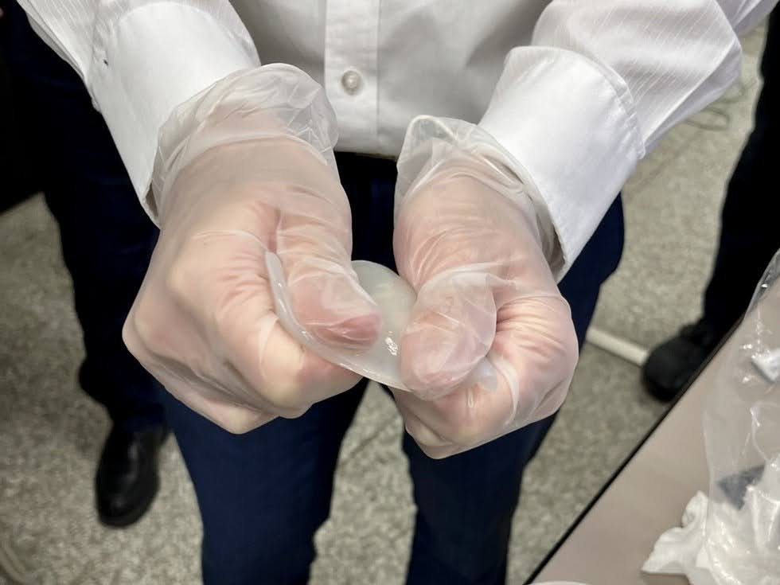

Curation

物質想像：有生命的材料與機器｜實踐大學設計學院工作營
Material Imaginaries: living material and machines
a deisgn camp by VISION BASE,
College of Design, Shih Chien University, Taiwan
April 19 - June 11, 2023
召集人｜黃宜品／盧彥臣
課程結構設計｜黃宜品／宮保睿／盧彥臣
技術指導｜林庭蔚（BioCreator）／周志展（BioCreator）／簡廷易（食品營養與保健生技學系）
教師社群協力｜王思豪
場地協力｜實踐大學媒體傳達設計學系／實踐大學食科推廣小組
展覽統籌｜張棨
視覺設計｜陳筠雯
創作研究群｜
媒傳系：陳筠雯／黃昭維／
工設系：許顯濤／徐筱媛／魏伯霈／王薈如／
服裝系：游雅茵／
建築系：鍾振鑫／連婕伶／王梓貽／柳富方／王品懿／
食保系：蕭右萱／林芳儀／秦琬茹
‣
特別感謝｜
▪︎ 林庭蔚 Weiting Lin
臨床病理專科醫師 | 基因體學技術 x 光電及再生醫學治療
開放科學｜Global Biocommunity Fellow｜BioCreator永續材料實驗室｜零時政府 Da0 DeSci
我們的基因體時代部落格 (weitinglin.com)
▪︎ 周志展
中興大學生命科學系|台灣大學生物科技所
BioCreator Lab永續材料實驗室｜Global Biocommunity Fellow
專長：分子生物實驗|動物細胞培養｜真菌液態培養｜細菌纖維素培養
▪︎ 簡廷易
臺北醫學大學藥學系博士
實踐大學食品營養與保健生技學系助理教授
研究領域：食品安全、食農教育、保健功效評估
主辦單位｜實踐大學設計學院 VISION BASE
協辦單位｜實踐大學媒體傳達設計學系、實踐大學食科推廣小組、BioCreator
經費來源：VISION BASE 數位整合創新計畫